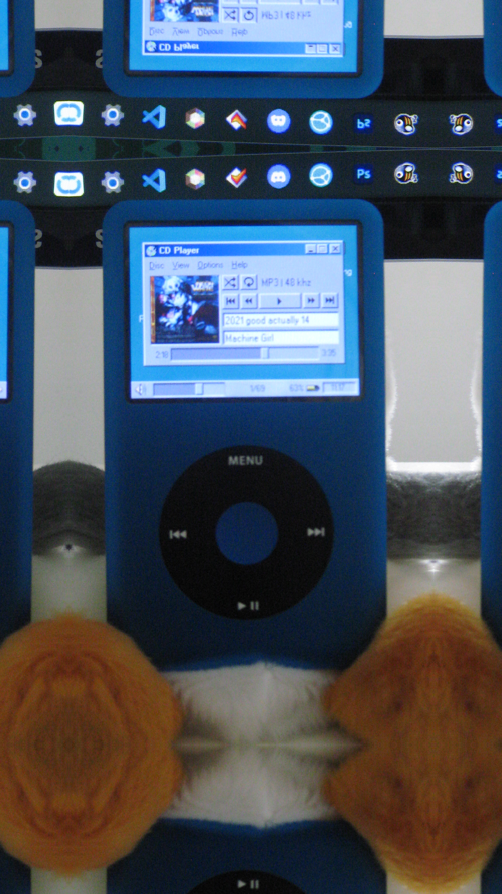

I carry around an IPod with me everywhere as my primary way of listening to music! I've been doing it since 2023 an I honestly wouldn't have it any other way!
(Before I go crazy on the details, I'd like to make it clear that I hold no reverance nor respect in my heart for Apple, the company. I know it might not seem that way what with the last page being formatted to look like an IPod touch and all, but that is purely personal nostalgia. As for the IPod classic thing, I do it because it was both A. an accessable MP3 player that I already owned that has access to a homebrewed OS and B. I was watching the Dankpods channel at the time. I do not respect Apple the company, in the slightest.)

As expected, using a piece of tech from 15 years ago daily has drawbacks. Thankfully most of these aren't software based. Any software issues I did have were either fixed by the developers (reporting an error and helping the software developers to fix it! The kind of thrills you don't get anywhere else.), or turned out to be hardware issues anyway (If you're going to flash mod an IPod, use an IFlash card. not a weird third party one that a trade-me seller installed).
Hardware issues are also less of a problem than expexted. For one, you'd think replacement parts would be hard to come by for a device this old. But thanks to a thriving community, there are many sellers on aliexpress and the like producing replacement parts of varying quality, and of varying colors too! The device itself is also very repairable, very dissimilar to the smartphones of the current day.
I also find great joy in keeping my collection of MP3s! Cultivating a library by hand is a joy that I don't think can be matched by streaming services, especially when A. You can pay artists to not only own a copy of their music forever but also compensate them fairly for it, and B. Get albums and songs that don't, can't or will never exist on streaming! Putting together my own little compilation albums and mixes is rad.